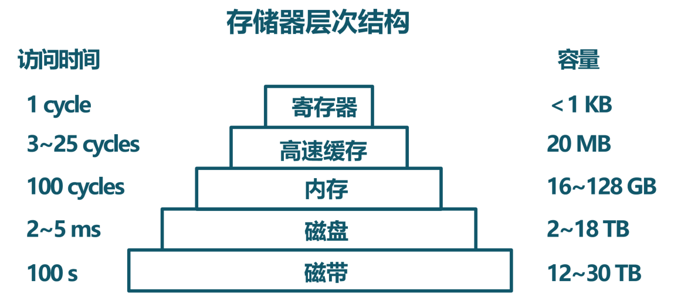
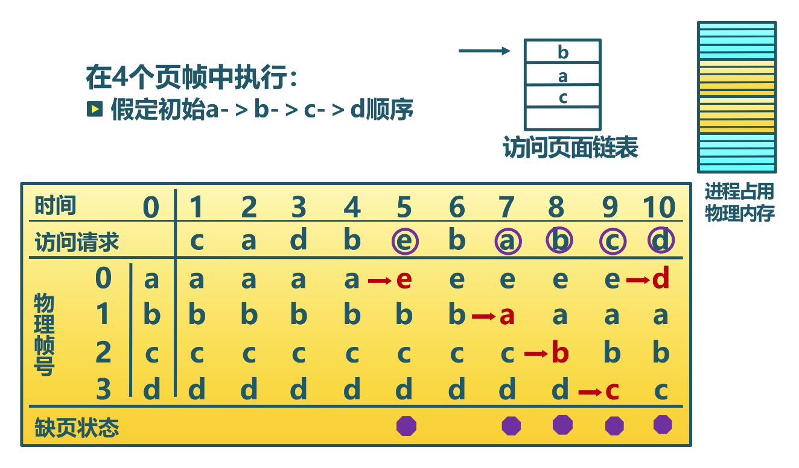

超越物理内存的地址空间#
本节导读#
有限的物理内存#
到目前为止，在面向批处理系统的操作系统中，正在运行的任务只有一个，可以访问计算机的整个物理内存空间。如果物理内存空间不够，任务需要比较小心翼翼的地申请和释放内存，来确保在当前时间段中内存够用。在面向多道程序的协作式操作系统或面向分时多任务的抢占式操作系统中，由于在内存中会有多个任务来共享整个物理内存，且任务之间的物理内存空间是隔离的，导致任务越多，每个任务可用的物理内存空间会越少。这样，在提高CPU利用率和任务间的隔离安全性的同时，一个比较严重的问题出现了： 物理内存不够用 。
注解
为什么要为应用程序支持巨大的地址空间？
在计算机发展的早期，计算机系统上的应用程序一般不需要巨大的地址空间，更需要的是强劲的CPU处理能力。但从二十世纪七十年代末开始的个人计算机一路发展至今，存在着某种动力使得人们如此频繁地更新计算机设备，这就是：
安迪比尔定律：比尔要拿走安迪所给的（What Andy gives, Bill takes away）
Intel处理器的速度每十八个月翻一番，计算机内存和硬盘的容量以更快的速度在增长。过去的MS DOS操作系统和DOS应用程序在内存容量为640KB的计算机上顺畅地运行。而现在的Windows 11和Windows应用程序在内存容量8GB的计算机上仅勉强够用，而建议的内存配置是16GB（是640KB的25600倍）。虽然新的软件功能比以前的版本强了一些，但其增加的功能和它的大小不成比例。
那大内存带来的好处是啥？ 方便！ 一般用户可以在计算机上同时开启多个应用：文字编辑、上网浏览、视频会议等，享受方便的数字生活。应用程序开发者不必担心要处理的数据是否有足够空间存储，只需编写程序，根据数据所需空间分配内存即可，甚至都不需要考虑释放内存的操作。
注：安迪是Intel公司 CEO 安迪·格鲁夫（Andy Grove），比尔是微软公司创始人比尔·盖茨（Bill Gates）。
超越物理内存的方法#
我们需要突破物理内存有限的限制，这需要通过应用程序的软件编程技巧或操作系统与硬件结合的内存管理机制来解决。首先，我们可以看看基于应用程序本身的方法，即分时复用内存：即应用程序/运行时库动态地申请和释放内存，让不同的代码和数据在不同时间段内共享同一块内存空间。
另外一种方法是基于操作系统的方法，即把远大于且远慢于物理内存的存储设备（如硬盘、SSD等）利用起来作为内存的一部分。如果把正在运行的任务所没用到的物理内存空间，比如处于等待状态的任务所使用的物理内存空间，甚至是正在运行的任务会较晚访问的数据所占用的内存空间，移出并暂存在存储设备中，那么应用程序可以访问的内存空间（虚拟的）就包括了存储设备的巨大容量了。
当然还有其他一些针对特定使用场景下的不太常用的方法，比如内存压缩方法。对于需要处理大数据的应用而言，内存中存放的主要是各种数据，而很多数据（如具有大量重复的值）是可以被压缩的。所以采用一定的压缩数据的结构和数据压缩方法，可以有效地减少数据占用的内存空间。
这些给应用程序带来好处的方法，也会引入各种运行时的开销，如果处理不当，会让任务本身，甚至整个系统的执行效率大大下降。所以，我们希望通过设计有效的机制和策略，能在扩大虚拟的内存容量的同时，保证应用程序和系统能够高效地运行。
分时复用内存#
考虑到应用程序在其运行中的不同时间段内，会使用不同的数据，所以可以让这些数据在不同的时间段内共享同一内存空间。这就是分时复用内存的基本思路。当应用程序从操作系统中只能获得一块固定大小的有限内存空间（称为：空闲空间）后，应用程序一般会采用动态分配内存的方式来合理使用有限的物理内存。在本章的 Rust 中的动态内存分配 一节中，讲述了动态内存分配的基本概念。如何动态地管理空闲内存以提高内存的使用效率，是一个需要进一步讨论的问题。我们将讲述两种方法：
动态内存分配：由应用程序主动发出申请或释放内存的动态请求，由运行时库或应用程序本身通过一定的策略来管理空闲空间。
覆盖技术：一个应用程序中存在若干个功能上相对独立的程序段（函数集合），它们不会同时执行，所以它们可以共享同一块内存空间。这需要应用程序开发者根据需要手动移入或移出内存中的代码或数据。
动态内存分配#
动态分配内存的目标是处理快速和浪费的空闲空间碎片少。这里我们会进一步分析动态分配内存的策略。对于不同的分配需求的前提情况，会有不同的分配策略。比如，每次分配的空间大小是固定的，那么就可以把空闲空间按固定大小的单元组织为一个列表。当需要分配时，从列表中的第一个单元取出即可；但需要回收时，把回收单元放到列表的末尾即可。
但应用程序需要的内存空间一般是大小不一的，这就需要相对复杂一些的策略来管理不同大小的空闲单元了。
最先匹配（first fit）策略#
首次匹配策略的思路很简单：尽快找到满足用户需求的空闲块。大致处理流程就是把空闲空间基于地址顺序组织为大小不一的空闲块列表。当需求方需要大小为n的空闲块时，搜索空闲块列表，找到第一个足够大的空闲块；如果此空闲块大小刚好为n，则把此空闲块返回给需求方；如果此空闲块大小大于n，则把空闲块分割为大小为n的前面部分和剩余部分，大小为n的前面部分返回给需求方，而剩余部分会回归给空闲块列表管理，留给后续请求。
最先匹配策略不需要遍历空闲列表查找所有空闲块，所以有速度上的优势，但释放的时间有一定的随机性，这可能会让空闲列表开头的部分有很多小块。
最优匹配（best fit）策略#
最优匹配（best fit）策略的思路也很简单：选择最接近需求方请求大小的块，从而尽量避免空间浪费。也是把空闲空间基于地址顺序组织为大小不一的空闲块列表。当需求方需要大小为n的空闲块时，遍历整个空闲列表，找到足够大且二者空间大小差距最小的空闲块。其代价是时间，即需要遍历一次空闲列表，找到最合适的空闲块。而且还有可能造成空间的浪费，因为可能产生很多小的空闲碎片，虽然碎片容量的总和比较大，但无法满足内存分配请求。
最差匹配（worst fit）策略#
最差匹配（worst fit）策略的思路与最优匹配策略相反，它尝试找最大的空闲块，这也需要遍历一次空闲列表。当对找到的空闲块进行分割并满足用户需求后，剩余的空闲部分相对于最优匹配或最先匹配策略剩余的空闲部分相比，在大小上要大不少，可能被再次分配出去的概率要大。但最差匹配策略同样需要遍历整个空闲列表，带来较大的性能开销；且在应用频繁申请和释放的随机情况下，也可能会产生大量的碎片。
减少碎片#
其实，采用上面的三种策略，都会由于对空闲块进行分割而产生碎片。所以减少碎片是一个需要考虑的重要问题。减少碎片有两种方法，第一种方法是合并操作，即在内存释放操作中，把在地址连续的多个空闲块合并为一个大的空闲块，这样可以满足更多的内存分配请求。
第二种方法是比较激进的紧致（compaction，也称紧凑）操作，即把地址不连续的多个空闲块移动在一个连续的地址空间中，形成一个大的空闲块。在移动空闲块的过程中，也需要移动已经分配的内存块。这除了带来性能上的影响外，还会带来数据寻址问题，应即用程序中数据所在的内存地址会发生改变，应用程序要能够感知这种变化，才能正确访问更新后的数据地址。这需要应用程序具有在紧致操作后的数据地址更新功能，这对应用程序开发者提出了很高的要求，不具有通用性。
覆盖（Overlay）技术#
覆盖技术是指一个应用程序在执行过程中，其若干程序段分时共享同一块内存空间。覆盖技术的大致思路是编写一个应用程序，把它分为若干个功能上相对独立的程序段（函数集合），按照其逻辑执行结构，这些程序段不会同时执行。未执行的程序段先保存在存储设备上，当有关程序段的前一部分执行结束后，把后续程序段和数据调入内存，覆盖前面的程序段和数据。

覆盖技术需要程序员在编写应用程序时，来手动控制和管理何时进行覆盖，不同程序段的覆盖顺序，以及覆盖的具体空间位置。这虽然减少了应用程序在执行过程中对内存空间的需求，当对应用程序开发者的编程水平提出了很高的要求，而且通用性比较差。
内存交换#
既然我们有了操作系统，就应该在给应用更大内存空间的同时，降低应用程序开发者的开发难度。这样的代价就是增加操作系统内核的设计和实现复杂度。操作系统有两种扩大内存的方法。第一种方法是交换（swapping）技术，基本思路相对简单，即把一个应用程序从存储设备完整调入内存执行，该应用运行一段时间后，再把它暂停，并把它所占的内存空间（包括代码和数据）存回存储设备，从而释放出内存空间。另一种方法是虚拟内存（virtual memory）技术，基本思路是使应用程序在只有一部分代码和数据被调入内存的情况下运行。
交换技术#
我们目前的操作系统还没实现这种技术，但不妨碍我们思考一下这种技术面临的问题和大致解决方法。在我们之前设计实现的批处理操作系统中，每次执行新应用时，需要把刚执行完毕的老应用所占内存空间给释放了，再把新应用的代码和数据换入到内存中。这是一种比较原始的应用之间交换地址空间（Swap Address Space）的方法。这种交换技术的方法也可进一步扩展用到多任务操作系统中，即把不常用或暂停的任务在内存中的代码和数据换出（Swap Out）存储设备上去。

首先是交换的时机，即何时需要发生交换？当一个任务在创建或执行过程中，如果内存不够用了，操作系统就需要执行内存交换操作。
第二个需要考虑的是交换的对象，即交换哪个任务？如果是一个刚创建的任务，在创建过程中内存不够用了，我们可以基于某种选择策略（如选择占用内存最多的那个任务）选择一个任务，把它所占用的内存换出到存储设备中，形成更多的空闲空间，直到被创建任务有足够的空间开始执行。如果是一个正在执行的当前任务动态需要更多的内存空间，操作系统有两种选择，一个选择与刚才的处理方式类似，找一个其他任务，并把其所占空间换出到存储设备中，从而满足当前任务的需要。另一个选择是把当前任务给暂停了（甚至有可能把它所占空间换出到存储设备上），然后让其他任务继续执行，并在执行完毕后，空出所占用的内存，并切换到下一个新任务执行，如果新任务在存储设备上，还需把新任务的代码和数据换入到内存中来；如果空闲内存能够满足被暂停的任务的内存分配需求，则唤醒该任务继续执行。
第三个需要考虑的是代码/数据的寻址，即任务被换出并被再次换入后，任务能否正确地执行？由于再次换入后，整个地址空间一般不可能正好被放入到同样的位置，这可以采用前述减少内存碎片的紧致技术中的地址更新方法，但实现复杂且不具有通用性。如果操作系统更新任务的页表内容，形成新的物理地址和虚拟地址映射关系。这样虽然任务换入后所在的物理地址是不同的，但可以让任务采用换出前同样的虚拟地址来执行和访问数据。
这里需要注意的是，即使解决了上述三个问题，但由于每次换入换出的数据量大（当然是由于任务的代码量和所访问的数据占用的内存空间大的原因），导致任务的执行会卡顿。这就需要以页为单位的内存换入换出技术 – 虚拟内存技术了。
虚拟内存技术#
由于有了基于硬件的分页机制和MMU/TLB机制，操作系统可以通过页表为正在运行的任务提供一个虚拟的地址空间，这就是虚拟内存技术的基础之一。但仅有这个基础还不足以让应用程序访问的地址空间超越物理内存空间。我们还需要解决的一个关键问题：操作系统如何利用更大且更慢的存储设备，来 透明 地给应用程序提供远超物理内存空间的一个虚拟的地址空间？
页面置换机制#
为解决这个关键问题，虚拟内存技术其实还需要一系列的页面置换机制来支持：
作为交换区的存储设备：用于存放换出的部分物理内存中的代码和数据。
页表项存在位：当应用程序(也可称为任务)访问被换出到交换区的物理内存（对应页表项的存在位为“0”）时，处理器会产生访存异常，让操作系统完成内存换入操作。
内存访问异常处理： 操作系统判断任务的访存异常的地址是否属于任务地址空间，如果是属于，则把交换区对应物理内存页换入内存，使得任务可以继续正常运行。
作为交换区的存储设备#
为了能够支持对物理内存的换入和换出操作，需要在存储设备上分配一个特定的分区或者文件，作为存放物理内存的交换区（swap space）。一般情况下，存储设备（如磁盘）的扇区大小为N，而一个页大小为k*N，(k和N为正整数)。为了支持以页为单位进行物理内存与交换区的换入换出操作，需要建立任务的页虚拟地址与多个磁盘扇区地址映射关系。这个映射关系可以建立在任务所在页表中对应虚地址的页表项中，即页表项中的内容是存储设备的扇区地址。这样操作系统在内存访问异常处理中，根据产生异常的虚拟地址，可快速查找到对应的页表项，并取出存储设备的扇区地址，从而可以准确地把存储在扇区中的物理内存换入到物理内存中。
另外，需要在存储设备上建立足够大小的交换区空间。这里的足够大小的值在一般情况下是一个经验估计值，比如是物理内存大小的1.5~2倍。这个值决定了整个系统中的所有应用程序能够使用的最大虚拟内存空间。
注解
按需分页（Demand Paging）
还有一点需要注意，交换区并不是应用程序的页面换入换出的唯一区域。由于应用程序的二进制代码文件一般存放在存储设备的文件系统中，当程序一开始执行时，该程序的代码段可以都不在物理内存中，这样当程序对应的任务创建后，一开始执行就会产生异常。操作系统在收到这样的异常后，会把代码段对应的内存一页一页地加载到内存中。则其实是一种内存访问的性能优化技术，称为“按需分页”（Demand Paging）,即只有在任务确实需要的时候，才把所需数据/代码以页为单位逐步从存储设备换入到内存中。
页表项（Page Table Entry）#
页表中的页表项记录了物理页号和对应页的各种属性信息，处理器根据虚拟地址中的虚页号（Virtial Page Number， VPN）为页表索引，可最终查找到虚拟地址所在的物理页位置。这是页表项的基本功能。当我们需要提供可远大于物理地址空间的虚拟地址空间时，页表项中的内容能发挥新的作用。
我们重新梳理一下某任务让处理器访问被换出到存储设备上的数据所经历的过程。在处理器访问某数据之前，操作系统已把包含该数据的物理内存换出到了存储设备上，并需要提供关键的关联信息，便于操作系统后续的换入工作：
该数据的虚拟地址是属于某任务的地址空间：可在任务控制块中包含任务的合法空间范围的记录
该数据的页虚拟地址所对应的存储设备的扇区地址：可在页虚拟地址对应的页表项中包含存储设备的扇区地址的记录
该数据的虚拟页没有对应的物理页：在页虚拟地址对应的页表项中的存在位（Present Bit）置“0”，表示物理页不存在
在后续某时刻，该任务让处理器访问该数据时，首先处理器根据虚拟地址获得虚页号，然后检查MMU中的TLB中是否由匹配的项目，如果TLB未命中，则会进一步根据页表基址寄存器信息，查找内存中的页表，并根据VPN找到虚拟页对应的页表项。硬件会进一步查找该页表项的存在位，由于已经被操作系统设置为“0”，表示该页不在物理内存中，处理器会产生“Page Fault”异常，并把控制权交给操作系统的“Page Fault”异常处理例程进行进一步处理。
内存访问异常处理#
操作系统的“Page Fault”异常处理例程首先会判断，该数据的虚拟地址是否是该任务的合法地址？根据之前操作系统的设置，答案是“Yes”；然后取出保存在对应页表项中的扇区地址，把存储设备上交换区上对应的虚拟页内容读入到某空闲的物理内存页中；接着更新页表项内容，即把对应的物理页号写入页表项，把页表项中的存在位（Present Bit）置“1”；最后是返回该任务，让该任务重新执行访问数据的指令。这次处理器再次执行这条指令时，TLB还是会没有命中，但由于对应页表项内容合法，所以TLB会缓存该页表项，并完成虚拟地址到物理地址的转换，完成访问数据指令的执行。
相对于内存访问，交换区的扇区访问要慢很多。为了进一步提高系统的执行效率，当操作系统在让存储设备进行I/O访问时，可将当前任务设置为阻塞状态，并切换其他可以运行的任务继续执行。通过这种任务调度方式，可以充分发挥多道程序和分时多任务的整体执行效率。
页面置换策略#
当物理内存不够用的时候，我们还需要考虑把哪些内存换出去的问题，这就是下面会深入讨论的页面置换策略。置换策略通常会根据程序的访存行为、访存效率的评价指标和一些通用原则来进行设计。
内存层次结构与局部性原理#
同学们在学习计算机组成原理和编程优化方法时，或多或少地都了解内存/存储的层次结构和局部性原理。
上图是一个典型的内存/存储的层次结构，上层比下层速度快但容量小，每一层都可以放置程序用到的代码和数据。这样的存储器层次结构设计是一种典型的工程思维，因为在成本等工程约束下，我们无法在构造出速度最快且容量最大的“理想”内存。我们希望基于这种层次结构，加上一定的软硬件优化手段，能够接近“理想”内存的目标。要达到这样的目标，需要理解局部性原理。
程序的局部性原理是指程序在执行时呈现出时空局部性的规律，即在一段时间内（时间特性），程序执行仅限于代码的某一部分，且执行所访问的内存空间也局限于某局部内存区域（空间特性）。
局部性可细分为时间局部性和空间局部性。时间局部性是指程序执行的某条指令在不久之后可能会再次被执行；程序访问的某数据在不久之后可能再次被访问。空间局部性是指当前程序访问某个内存单元，在不久之后可能会继续访问邻近的其他内存单元。
如果一个程序具有良好的局部性，那么处理器中的Cache就可以缓存程序常用的局部数据和代码，而相对不常用的数据和代码可以放在内存中，从而加快程序的运行效率。同理，操作系统也可以在内存中以页为单位来缓存程序常用的局部数据和代码。但物理内存有限，把哪些数据和代码换入到内存中或换出到存储设备的交换区，是一个值得探索的页面置换策略问题。
评价指标#
页面置换策略可以由多种，这就需要对各种策略的优劣进行评价。我们希望程序访问的数据 快 ，最好是数据都在物理内存中。但这仅仅是理想，一旦数据不在物理内存，即访存未命中，就会产生“Page Fault”异常，并让操作系统从存储设备的交换区把数据缓慢地读入到内存中。
如何量化程序访问的速度呢？如果能知道程序执行过程中的访存命中次数和未命中次数，就可以计算出程序的平均内存访问时间：
这里 \(T_m\) 是访问内存单元的时间，\(T_s\) 是访问存储设备的时间， \(P_{hit}\) 是访存命中次数， \(P_{miss}\) 是访存未命中次数。 访存命中率是：
由于访问内存比访问存储设备快2~3个数量级，所以性能瓶颈是对存储设备读写次数，即访存未命中次数。 只有减少访存未命中次数，才能提高访存命中率，并加快平均内存访问速度。所以页面置换策略的评价指标就是 访存未命中次数 或 访存命中率。
策略范畴#
对于页面置换策略，还需考虑是否会动态调整任务拥有的物理页数量，如果可以动态调整，这会对其他任务产生影响。如果操作系统给每个任务分配固定大小的物理页，在任务的执行过程中，不会动态调整任务拥有的物理页数量，那么对任务进行页面置换，不会影响到其他任务拥有的物理内存。这种情况下的策略属于局部页面置换策略范畴，因为它只需考虑单个任务的内存访问情况。
如果操作系统通过某种页面置换策略可动态调整某任务拥有的物理内存大小，由于总体的物理内存容量是固定的，那就会影响到其他任务拥有的物理内存大小。这样的策略属于全局页面置换策略范畴。
全局页面置换策略可以在任务间动态地调整物理内存大小，通常比局部页面置换策略要效果好一些。而对于某些具体的页面置换策略，可既适用于局部页面置换策略范畴，也使用于全局页面置换策略范畴。
最优置换策略#
操作系统如果能够预先知道应用程序在执行过程中每次内存访问的虚拟地址序列，那就可以设计出一个最优置换策略，即可以让程序的未命中数量最小。其基本思路是选择一个应用程序在随后最长时间内不会被访问的虚拟页进行换出。当然，最长时间可以是无限长时间，表示随后不会再访问。
但操作系统怎么知道一个虚拟页随后多长时间不会被访问呢？在一般情况下当然不知道，所以最优置换策略是一种无法实际实现的策略。最优置换策略一般可作为标杆而存在，即我们可以把最优页面置换策略于其他可实现的策略进行性能比较，从而对各种策略的效果有一个相对的认识。
FIFO置换策略#
早期操作系统系统为了避免尝试达到最优的计算复杂性，采用了非常简单的替换策略，如FIFO（先入先出）置换策略。其基本思路是：由操作系统维护一个所有当前在内存中的虚拟页的链表，从交换区最新换入的虚拟页放在表尾，最久换入的虚拟页放在表头。当发生缺页中断时，淘汰/换出表头的虚拟页并把从交换区新换入的虚拟页加到表尾。
FIFO置换策略虽然在实现上简单，但它对页访问的局部性感知不够，及时某页被多次访问，也可能由于它较早进入内存而被置换出去。
{kind=link}
LRU置换策略#
LRU（Least Recently Used，最近使用最少）置换策略是一种基于历史来预测未来的置换策略，其基本思路是：操作系统替换的是最近最少使用的虚拟页。“最近”是一个时间维度的量，表示过去的一段时间。精确地说，过去的这段时间是从程序开始执行到当前程序产生“Page Fault”异常的时间片段。虚拟页被访问的近期性（Recency）表示页被访问到目前产生异常这段时间的长短。这段时间越长，页被访问的近期性越弱，最弱即最近使用最少；反之，近期性就强。
访存的近期性是一种历史信息，也是程序局部性的一种体现，因为越近被访问过的页，也许在不久的将来再次被访问的可能性也就越大。所以LRU置换策略是一种以历史来预测未来的启发式方法。在一般情况下，对于具有访存局部性的应用程序，LRU置换策略的效果接近最优置换策略的效果。

为了实现LRU置换策略，操作系统需要记录应用程序执行过程中的访存历史信息，这在实际实现上是一个挑战。LRU置换策略需要记录应用访问的每页的最后一次被访问的时间。这样，当一个页必须被替换时，该策略就选择最长时间没有被使用的页。 这里的难点是如何准确记录访存的时间信息。我们可以想象一下，通过扩展硬件和软件功能的软硬结合的方式来记录：
硬件计数器方法
处理器添加一个计数器，且操作系统为每个页表条目添加一个使用时间字段。对于处理器的每次内存访问，计数器都会递增。每当对某虚拟页进行访问时，计数器的内容都会被处理器复制到该页对应的页表条目中的使用时间字段。这样，我们总有最后一次使用每页的“相对时间”。当尝试“Page Fault”异常并需要替换虚拟页时，操作系统搜索页表，找到具有最小的使用时间的页表项，并把该页表项对应的虚拟页替换出去。
这个方法对硬件资源要求很高，且执行开销高昂。为保证记录的使用时间有足够的表示范围，时计数器位数应该比较大，比如64位，如果太小，计数器容易溢出。这样每个页表项也会扩大一倍（假设原页表项占64 bit）。在性能上的影响更大，处理器需要不时地对位于内存中的页表项进行写操作，且在替换时，还需执行一个开销很大的最小使用时间的页表项查找过程。这将大大影响计算机的造价和实际的性能，所以，该方法也就停留在理论的可行性上了。
stack方法
stack方法是一种基于栈组织结构的算法。即把表示页（有虚拟页号即可）的项目按访存先后组织位一个栈式单链表，表头指向最近访问的页项目，表尾指向最久访问的页项目。每当应用访问一个页时，处理器就会从链表中找到该页对应项目，移除并放在链表头。这样，最近使用的页总是在栈式单链表的顶部，而最近最少使用的页总是在链表的底部。因为必须从栈的中间移除项目，所以一般通过链表组织来实现。
这个方法消耗更多内存，且执行开销很大。由于链表的容量，使得它只能放在内存中。如果由处理器硬件来处理，则对硬件资源要求很高，对于每次访问页，处理器都需要查找链表，并更新链表。如果由软件来处理，那操作系统需要感知每次的访问页情况，则需要处理器通过某种异常机制来通知，并在随后的异常处理过程中，完成对链表的查找和更新工作。这两种方法的执行时间开销都很大，所以stack方法也停留在理论的可行性上了。
问题：我们是否真的需要找到准确的最旧页来替换？在大多数情况下，找到差不多最旧的页是否也能够获得预期的效果?
Clock置换策略#
从计算机系统的工程设计（考虑成本）和操作系统设计（考虑执行开销）的角度来看，近似LRU策略更为可行。近似LRU策略的关键问题是：如何以尽量小的硬件开销和执行代价快速找到差不多最旧的页？
根据之前的 页面置换机制 中处理器访问数据的过程，我们可以了解到在访问数据前，想要查找位于TLB或内存中的页表项，所以我们可以对页表项中的某些位进行一定的扩展，用来表示应用访问内存的情况。如果要表示应用访问某页的情况，可以用一位就够了，“1”表示近期访问了某页，“0”表示近期没有访问某页。在最小硬件成本的前提下，我们就可在页表项中的一个bit（use bit 使用位, 也称 reference bit 引用位）来表示页表项对应的虚拟页的访问情况。
那么如何访问这个特别的bit呢？这里处理器和操作系统之间达成了一个访问约定：每当页被引用（即读或写）时，处理器硬件将把对应该页的页表项的使用位设置为1。但是，硬件不会清除该位（即将其设置为0），而这是由操作系统来负责的。
有了关于使用位的硬件设置和访问约定，我们就可以设计出近似LRU置换策略了。 想象一下，应用所在地址空间中的所有有效页（页表项的存在位为1）都放在一个环形循环列表中，一个指针像时钟的指针一样，会围绕环形列表旋转。该指针开始时指向某个特定的页。当必须进行页换出时，操作系统会查找指针当前指向的页对应的页表项，并检查该页表项的使用位是1还是0。如果是0，则意味着该页最近没被使用，适合被替换，指针递增到链表的下一项。如果是1，则意味着该页最近被使用，因此不适合被替换，然后把使用位设置为0，时钟指针递增到链表的下一页，一直持续到找到一个使用位为0的页。
这种近似LRU策略类似时钟旋转的过程，所以也称为Clock（时钟，也称 Second-Chance 二次机会 ）置换策略。虽然Clock置换策略不如LRU置换策略的效果好，但它比不考虑历史访问的方法要好，且在一般情况下，与LRU策略的结果对比相差不大。

时钟置换策略的一个小改进，是进一步额外关注内存中的页的修改情况。这样做的原因是：如果页已被修改（modified，也称 dirty），称为脏页，则在释放它之前须将它的更新内容写回交换区，这又增加了一次甚至多次缓慢的I/O写回操作。但如果它没有被修改（clean），就称为干净页，可以直接释放它，没有额外的I/O写回操作。因此，操作系统更倾向于先处理干净页，而不是脏页。
为了支持这种改进，页表项还应该扩展一个修改位（modified bit，又名脏位，dirty bit）。处理器在写入页时，会设置对应页表项的此位为1，操作系统会在合适的时机清除该位（即将其设置为0）。因此可以将该修改位作为该页近期是否被写的信息源。这样，改进的时钟置换策略，制定出新的优先级，即优先查找并清除未使用且干净的页（第一类）；如无法找到第一类页，再查找并清除已使用且干净的页或未使用且脏的页（第二类）；如果无法找到第二类的页，再查找并清除已使用且脏的页（第三类）。
工作集置换策略#
上述置换策略没有涉及动态调整某任务拥有的物理内存大小（也称页帧数，Frame Number）。如果置换策略能动态调整任务拥有的物理内存大小，则可以在系统层面对其他任务拥有的物理内存产生影响。下面介绍的置换策略就具有这样的特征。
计算机科学家Denning在二十世纪六十年代就发现，大多数程序都不是均匀地访问它们的地址空间，而不同时间段的访问往往是集中在不同的小部分页面中。在程序执行的任一时刻，都存在一个动态变化的页面集合，它包含所有最近内存访问所访问过的页面。这个集合其实就是工作集（working set）。
理解工作集置换策略的前提是先理解工作集的定义。一个任务当前正在使用的页面集合称为它的工作集（working set，也称驻留集合）。如果整个工作集都被装入到了内存中，那么任务在运行到下一运行阶段之前，一般不会产生很多缺页中断。若内存太小而无法容纳下整个工作集，那么任务在后续运行过程中可能会产生大量的缺页中断，导致执行变慢。
注意，上述工作集的概念和对缺页中断的推断，其实是建立在程序执行具有局部性这个基础上的，也是一种根据历史来推测未来的启发式方法。为了基于工作集的特征来设计置策略，我们需要量化工作集的概念。在t时刻，任务最近n次内存访问均发生在m个页面集合上，那么这个页面集合就是任务在t时刻最近k次内存访问下的工作集，用 w(k,t) 来表示。工作集中页面数量用 |w(k,t)| 表示。 随着任务的执行，工作集中的页面会发生变化，其数量也会发生变化。如果一个任务占用的页面数与其工作集大小相等或超过工作集，则该任务可在一段时间内不会发生缺页异常。如果其在内存的页面数小于工作集，则发生缺页中断的频率将增加。
所以，工作集置换策略的目标就是动态调整工作集的内容和大小，一个任务占用的页面数接近其工作集大小，减少缺页异常次数。

实现工作集置换策略的基本思路是，操作系统能及时跟踪任务执行中位于工作集中页面，然后在发生缺页异常或过了一段时间间隔时，淘汰一个不在工作集中的页面，如果缺页异常就换入位于交换区中的页。
实现工作集置换策略的调整是及时获取工作集信息。有了工作集的定义并不意味着存在一种工程上可接受的有效方法，能够在程序运行期间及时准确地计算出工作集。
如果暂时不计考虑硬件上的工程成本，我们可以在处理器上添加一个长度为k的移位寄存器，当前处理器每进行一次内存访问就把寄存器左移一位，然后在最右端插入刚才所访问过的页面号。这样把移位寄存器中的k个页面号按访问时间排序，并去除老的重复页面，形成的集合就是工作集。然而，维护移位寄存器并在缺页中断时处理它所需的开销很大，因此该技术仅仅停留在理论上。
其实，我们也可以参考近似LRU策略，提出近似工作集置换策略。一种可行的近似方法是，不向后找最近k次的内存访问，而改为查找一段固定时间被访问的页面。比如，工作集即是一个任务在过去τ时间段中的内存访问所用到的页面集合。在一般情况下，对于过去τ时间段的具体值是基于经验设置的，如10ms。这里，我们可以根据页面对应页表项的访问位来判断该页在过去τ时间段中是否被访问，如果该位为 “1” ，表示该页被访问，属于工作集，否则就不属于工作集。当然这种近似方法对工作集的跟踪比较粗略，我们可以建立每个访问页的时间戳链表，得到更准确的工作集信息，但这样的执行开销和空间成本就大了。
当缺页中断发生后，需要扫描整个页表才能确定被淘汰的页面，因此基本的工作集置换策略是比较费时的。Carr和Hennessey在1981提出了一种基于时钟信息的改进的工作集置换策略，称为WSClock（工作集时钟）置换策略。由于它实现简单，性能较好，所以在实际工作中得到了广泛应用。该策略首先要建立一个以页框为元素的空的循环表。当操作系统加载第一个任务访问的页面后，把对应的页面信息加到该表中。随着更多页面的加入，它们形成一个更大容量的循环表，其中每个表项包含来自基本工作集置换策略中记录的上次使用时间和访问位信息（由处理器硬件置一，表示访问该页）。
每次缺页中断时，WSClock置换策略首先检查指针指向的页面，如果指针指向的页面的存在位为1，表示该页面在当前时钟滴答中就被使用过，那么该页面就不适合被淘汰。然后把该页面的存在位置为0，并指针指向下一个页面，重复扫描循环表。如果指针指向的页面存在位为0，再进一步检查该页面的生存时间大于τ，那它就不在工作集中，是属于被淘汰的页。
缺页率置换策略#
在上面的各种置换策略中，或多或少涉及到对页面访问时间的记录和查找，排序等操作，开销很大。而置换策略的目标是减少缺页次数或缺页率。缺页率置换策略就是一种直接根据缺页率的变化来动态调整任务的物理内存大小的方法。如果缺页率高了，就增加任务占用的物理内存，如果缺页率低了，就减少任务占用的物理内存。任务占用的物理内存也称常驻集，即当前时刻，任务实际驻留在内存中的页面集合。
那如何计算缺页率呢？ 缺页率的定义如下：
缺页率（page fault rate）= 缺页次数 / 访存次数
要得到缺页率的精确值比较困难，主要是访存次数难以精确统计。我们可以采用一种近似的方法来表示缺页率。从上次缺页异常时间Tlast 到现在缺页异常时间Tcurrent 的时间间隔作为缺页率的当前指标。并用一个经验值Ts表示适中的缺页率。

这样，缺页率置换策略的基本思路就是：在任务访存出现缺页时，首先计算从上次缺页异常时间Tlast 到现在缺页异常时间Tcurrent 的时间间隔。然后判断，如果 Tcurrent – Tlast > Ts, 则置换出在 [Tlast , Tcurrent ] 时间内没有被引用的页，并增加缺失页到工作集中；如果 Tcurrent – Tlast ≤ Ts, 则只增加缺失页到工作集中。
在上述思路描述中，
Tcurrent – Tlast > Ts 表示缺页率低了，通过置换出在 [Tlast , Tcurrent ] 时间内没有被引用的页，来减少任务的常驻集。
Tcurrent – Tlast ≤ Ts 表示缺页率高了，需要增加任务的常驻集。
页是否被引用是根据任务访问的内存页对应的页表项的存在位信息来判断的。
Belady异常现象#
计算机科学家Belady及其同事在1969年左右在研究FIFO置换策略是，发现了一个有趣的现象，对于一个内存访问序列：1，2，3，4，1，2，5，1，2，3，4，5，当物理页帧数从3增加为4时，访存命中率反而下降了。
我们通常理解，当一个任务的物理页帧数量变大时，访存的命中率是会提高的。但在上面的例子中，命中率反而下降了。这种异常现象被后人称为Belady异常（Belady’s Anomaly）。
而其他一些策略，比如LRU置换，最优置换等，就不会遇到这个问题。其原因是，LRU等具有栈特性（stack property），即数量为 m+1 的物理页帧一定包括数量为 m 的物理页帧的数据内容。因此，当增加物理页帧数量时，访存命中率至少保证不变，且有可能提高。而FIFO策略、时钟策略等没有栈特性，因此可能出现异常行为。
小结#
本节的内容比较多，我们介绍了超越物理内存的地址空间，涉及动态内存分配、虚拟内存等概念、机制和策略。如果由应用程序自己来做，会给应用程序员很大的开发负担。如果让操作系统来做，细节对应用程序都是透明的，应用程序员会很开心。但负担转移到了处理器硬件和操作系统上。我们需要对硬件进行扩展，如在页表项中增加1bit的存在位、访问位和修改位等。操作系统页错误处理例程（page-fault handler）会将需要的页从存储设备的交换区读取到内存，并可能还需要先换出内存中的一些页，为即将换入的页腾出空间。
我们还介绍了一些页置换策略，这些策略有些只存在理论中，并不实用，但其中的思路可以借鉴和发展，比如设计新的近似策略。在当前情况下，考虑到内存的成本在下降，购买更多的内存也是一种很实际的方法。